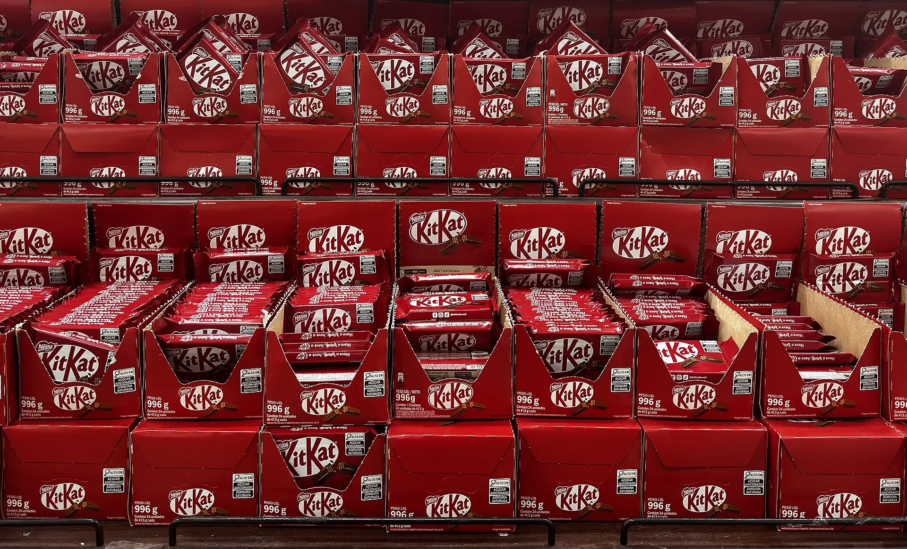

KitKatChocolate wafer
France The classic four-finger bar sits at the heart of the range.
Japan Regional and seasonal flavours, and a good-luck gift: “Kitto Katsu”.
Two Markets. One Global Group.
A closer look at how global brands connect with local consumers.
Select a brand to compare the two markets

France The classic four-finger bar sits at the heart of the range.
Japan Regional and seasonal flavours, and a good-luck gift: “Kitto Katsu”.
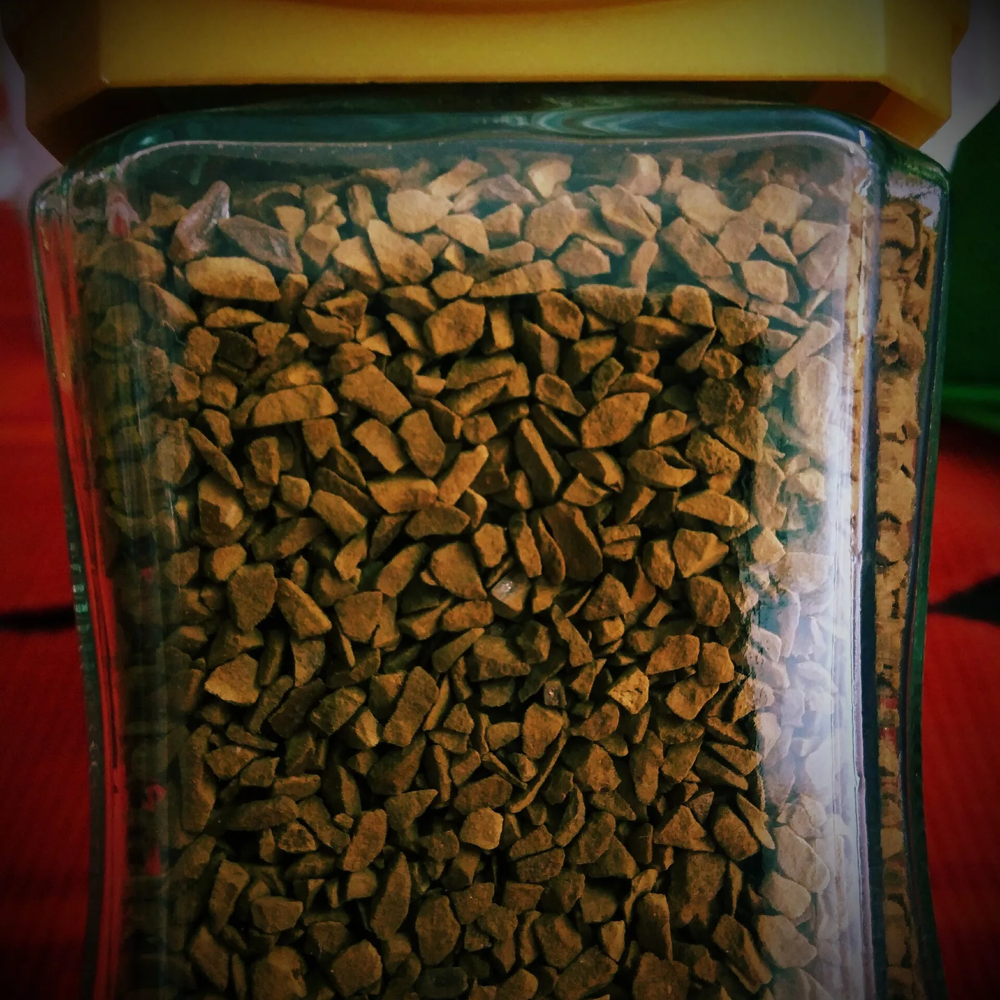
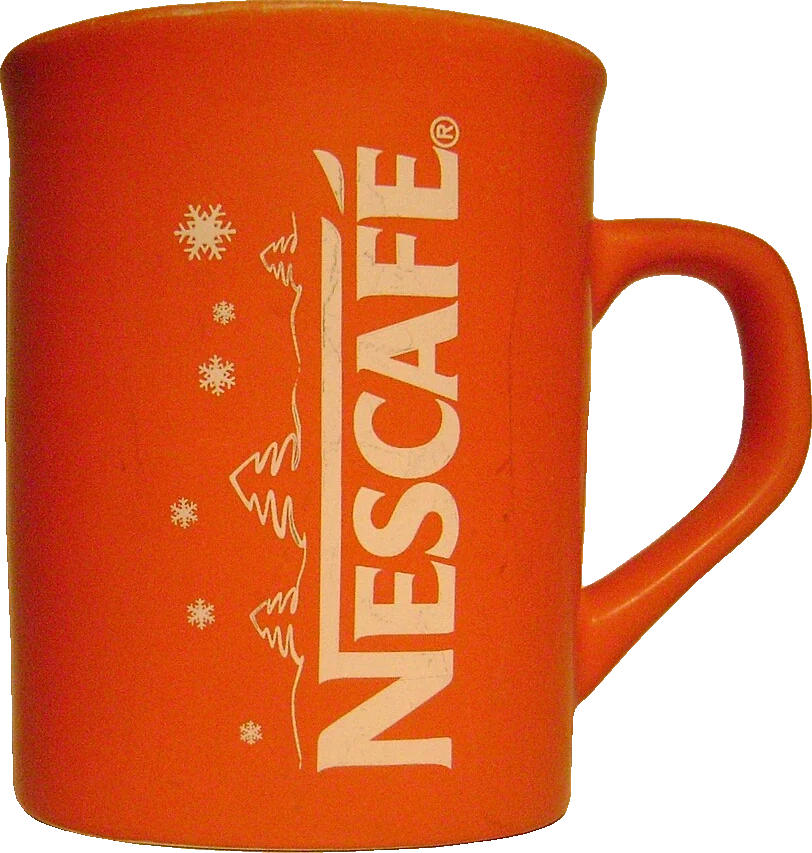
France Coffee with milk at breakfast, capsule machines at home.
Japan Gold Blend, home coffee machines and coffee on the go.
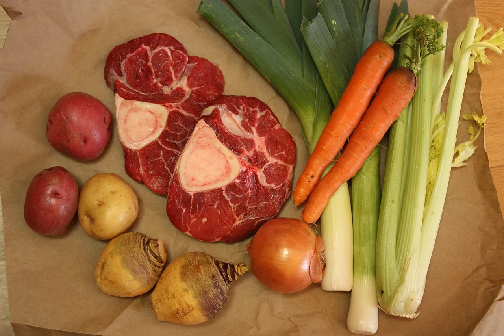
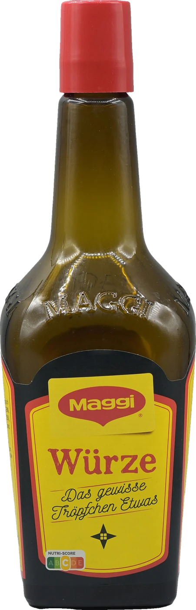
France Stock cubes for soups and slow-cooked classics.
Japan Maggi Bouillon, a Western-style stock for home cooking.

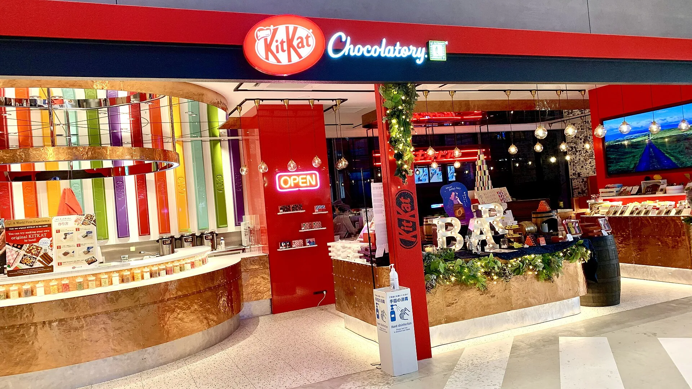


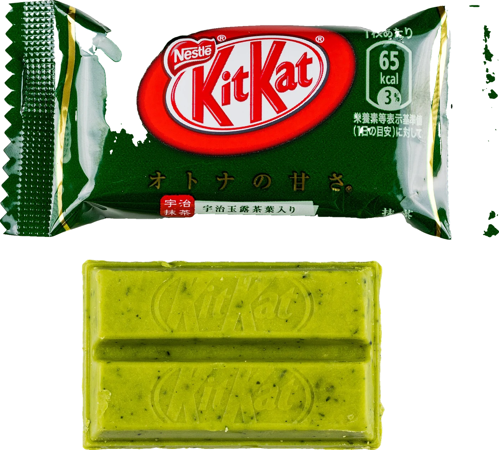


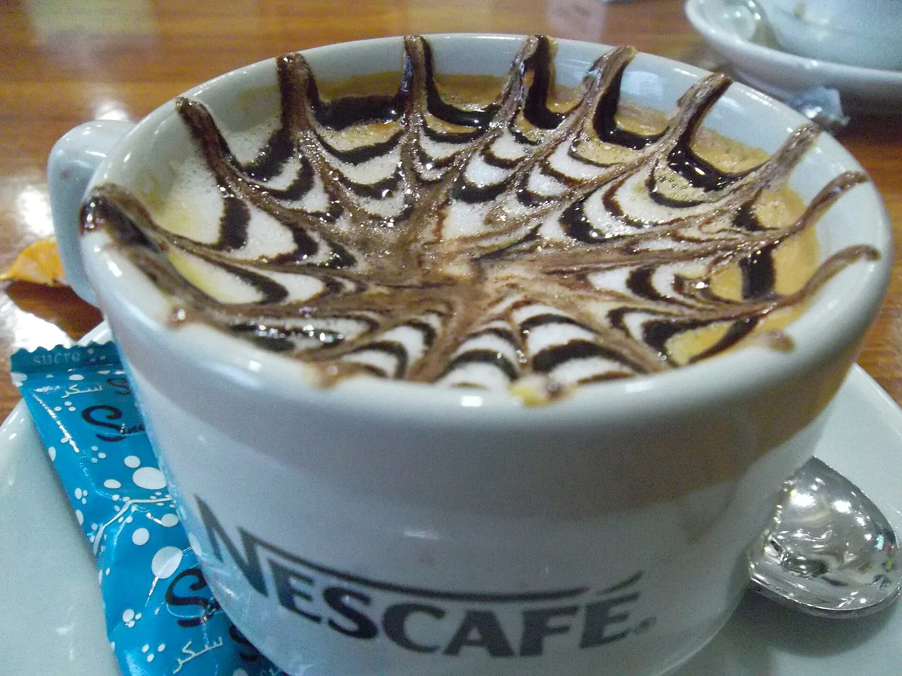
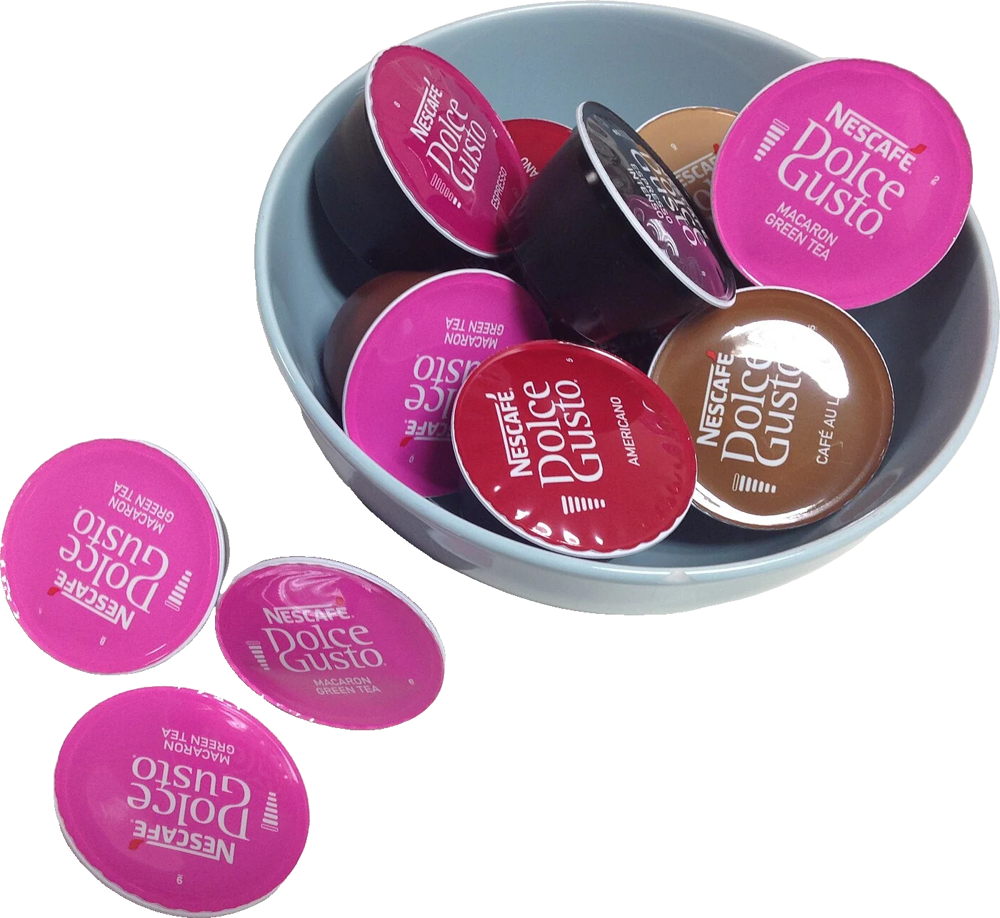
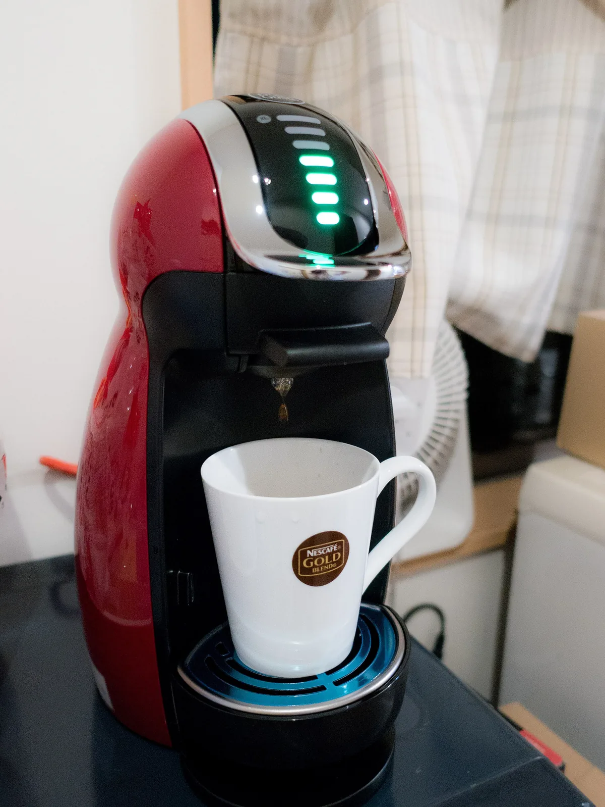

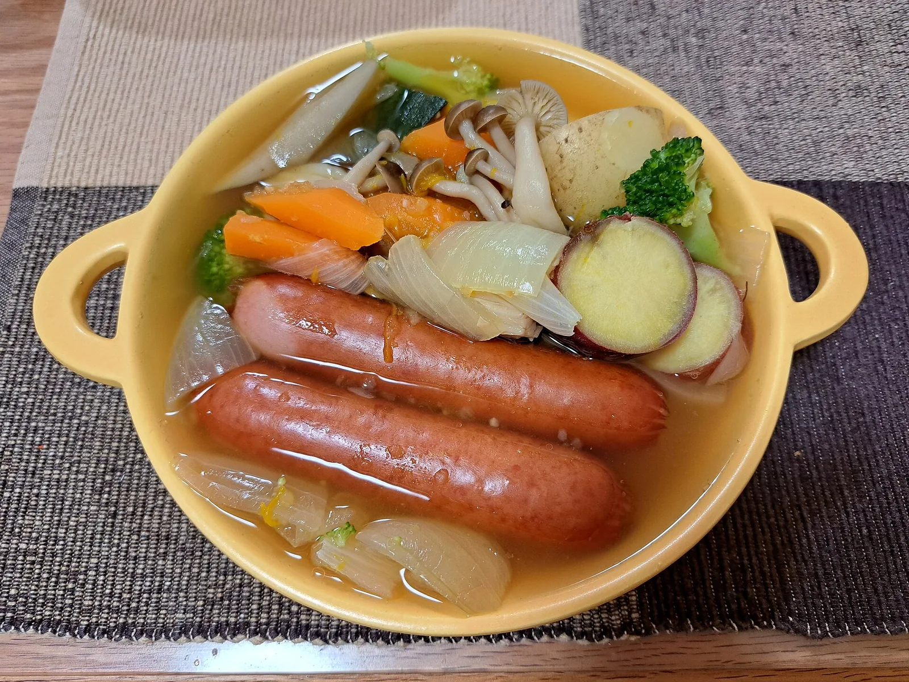


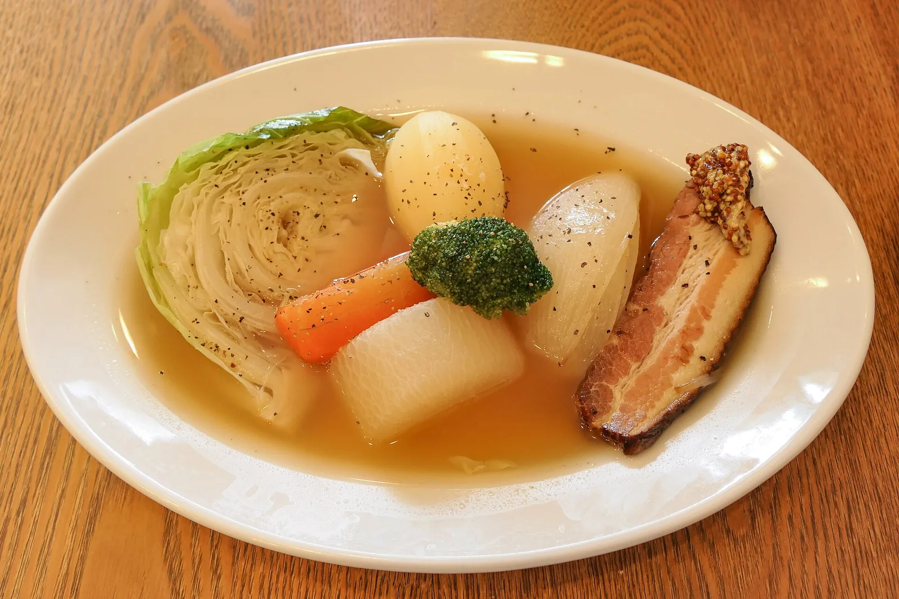
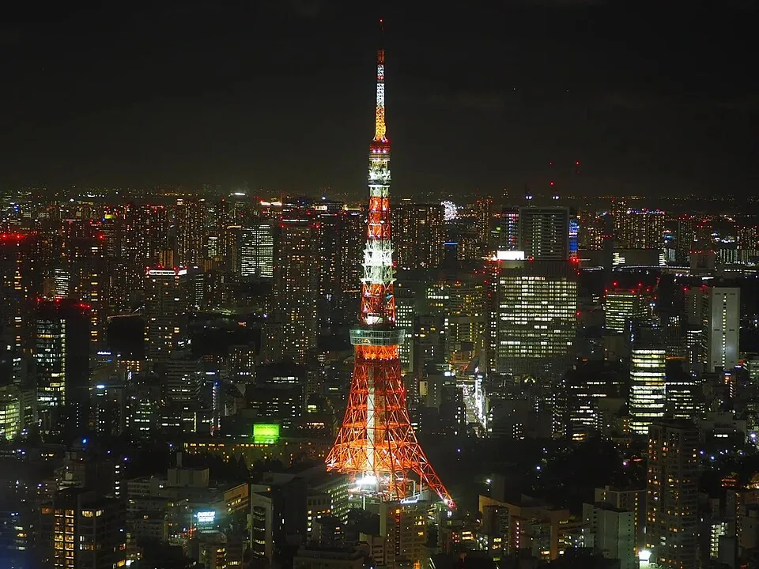
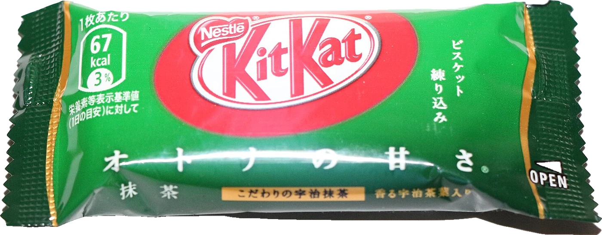
Global brand strength comes from understanding local consumers.
Turn your phone sideways for the full presentation